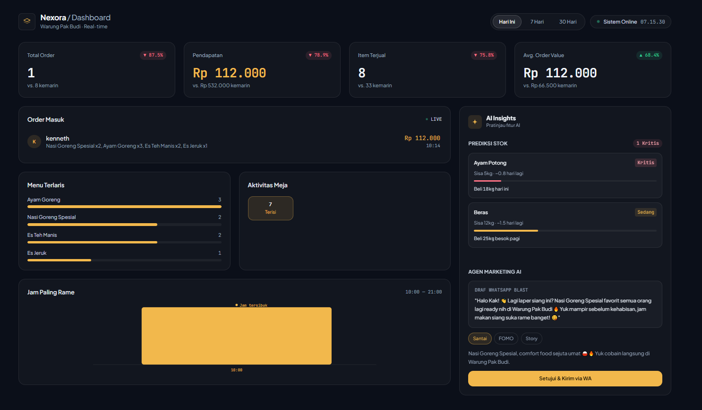

// automation & ai systems
I'm Kenn, founder of Nexora Labs. I design and build lightweight automation — ordering systems, WhatsApp workflows, real-time dashboards, and AI-ready backends — for small businesses that need results without enterprise budgets.
Featured project

Warung Pak Budi, a local restaurant, ran entirely on manual processes — handwritten order notes, no visibility into sales until closing time, no way to tell which menu items or hours actually drove revenue. Nexora Labs built an end-to-end digital ordering and operations system to fix that.
Customers scan a code and order directly from their phone — no app, no waiting on staff.
Every order triggers an instant confirmation to the owner via the Fonnte WhatsApp API.
Live revenue, order volume, best-sellers, table activity, and peak-hour analysis — updating automatically.
Backend structured to plug in stock forecasting, marketing copy generation, and a financial Q&A assistant.
Result: the owner moved from a same-day paper tally to continuous, real-time visibility into the business, with zero manual data entry anywhere in the pipeline.
View live dashboardMore work
Fully automated daily content pipeline — AI-generated quotes, custom image rendering, and scheduled publishing, running hands-off via GitHub Actions.
Real-time gold price monitoring with AI-generated trend analysis, delivering instant alerts straight to Telegram.
Tools I work with